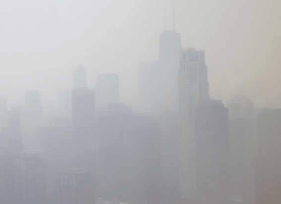

NATIONAL GEOGRAPHIC
How these parrots went from the tropical jungle to the concrete jungle
ANIMAL
Temple City, California, is an unassuming city east of Pasadena that’s home to the usual busy thoroughfares, shopping malls, and residential neighborhoods that one expects in densely developed Los Angeles County. And in addition to people and their pets, Temple City hosts a surprising avian population.
At dusk, hundreds of wild parrots, some in large flocks, some singly or in pairs, approach from all directions, squawking loudly and circling overhead before settling on a variety of roosts. The brightly colored birds create a spectacle as they land in trees, on power lines, and on cell towers, but what makes them so distinctive is the racket they make.
“Look,” said Luke Tiller, my parrot guide and the chapter president of the Pasadena Audubon Association as he pointed at a distinct speck in the sky. “A falcon.”
Witnessing the parrots returning to their evening roost was a startling and capitivating experience, seemingly at odds with the dense urban environment. It also begged the question: How did these parrots, and others like them across Los Angeles, come to live so far from their native habitats in an environment that is completely different?
From the forests to the city
Unlike many non-native species, L.A.’s parrots are relatively benign and haven’t displaced native birds, and therefore aren’t considered invasive by the state of California. The parrots’ main impact has been to amuse or annoy people during the raucous overflights of large flocks. However, due to the severe decline of one species in its native landscape, there may be an important second act for L.A.’s parrots.
The most commonly seen parrot in Los Angeles is the red-crowned parrot, which is native to a small region of northeastern Mexico. Native populations of these birds have been decimated by the illegal pet trade and habitat loss, declining by 95 percent. The birds have been red-listed by the International Union for Conservation of Nature as an endangered species.
Experts believe the Los Angeles red-crowned parrot population, estimated at over 3,000 birds, is now larger than the remnant population in Mexico. There also might be considerable genetic diversity in L.A.’s parrots, a feature that could prove to be a lifeline for Mexico’s endangered population.
Researchers at the Moore Laboratory for Zoology at Occidental College in L.A. are currently studying the DNA of Los Angeles’ red-crown parrot population and comparing it with DNA from preserved Mexican parrots collected from the 1930s to the 1950s to determine if the L.A. parrots really are direct descendants. If so, then the avian Angelenos could indeed be a valuable “rescue population” for their endangered relatives, says John McCormack, the director of the Moore Laboratory.
Comments :
- john Very good
- john Very good
Leave a Reply
Your email address will not be published. Required fields are marked*
Related posts:
-
Haunted Appalachia These ancient mountains witnessed the birth of man and monster
From the Mothman, Wampus Cat, and Raven Mocker to the Grafton and Flatwoods Monsters, the Appalachians are teeming with supernatural creatures. TikTok is flooded with stories of #hauntedappalachia
View article -
 Could billions of oysters protect us from the next big storm
Could billions of oysters protect us from the next big stormThis year has been a year of record-breaking weather. The summer of 2023 was the hottest in history followed by September being the warmest on record by a wide margin. In New York, it was also the wettest September
View article -
How wildfire smoke infiltrates your home and how to get rid of it
Wildfires are becoming increasingly common, lengthy, and intense, due to climate change. In addition to endangering lives, homes, and the environment, the smoke they cause has health risks, including respiratory and heart disease.
View article